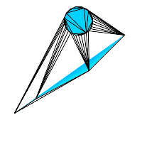

ST_ConstrainedDelaunayTriangles — 入力ジオメトリの周りの制約付きドロネー三角形を返します。
geometry ST_ConstrainedDelaunayTriangles(geometry g1);
入力ジオメトリの周りの制約付きドロネー三角形 (Constrained Delaunay triangulation)を返します。出力はTINです。
This method needs SFCGAL backend.
Availability: 3.0.0
This function supports 3d and will not drop the z-index.
二つのポリゴンのST_ConstrainedDelaunayTriangles
select ST_ConstrainedDelaunayTriangles(
ST_Union(
'POLYGON((175 150, 20 40, 50 60, 125 100, 175 150))'::geometry,
ST_Buffer('POINT(110 170)'::geometry, 20)
)
);
|  ST_DelaunayTriangles 二つのポリゴン。三角形の辺はポリゴンの境界にクロスしています。
select ST_DelaunayTriangles(
ST_Union(
'POLYGON((175 150, 20 40, 50 60, 125 100, 175 150))'::geometry,
ST_Buffer('POINT(110 170)'::geometry, 20)
)
);
|